Base color
The color of the surface.
Roughness
How smooth or matte the surface is.
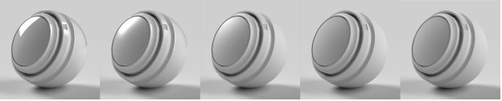
Metallic
The degree of metallic luster the surface has.
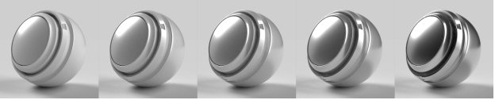
Opacity
The visibility of the surface.
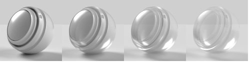
Ambient occlusion
Shadows from cavities and creases preventing light from hitting the surface.
Specular level
The strength of light reflections on the surface.
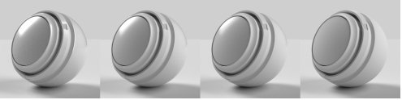
Specular edge color
The color of light reflections. Affects glancing angles for metallic materials.
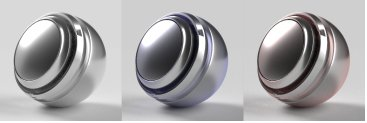
Normal
Simulates surface details like bumps and cracks.
Normal scale
The strength of the normal effect.
Combine normal and height
Applies the normal texture on top of the height texture.
Height
Creates surface details using bump or geometry displacement.
Height scale
The scale of height in scene units. Applies to both bump and displacement.
Height level
The value of the height texture representing zero displacement.
Anisotropy level
The amount that reflections stretch in one direction along the surface.
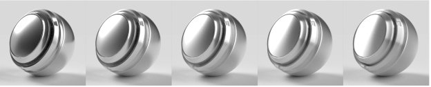
Anisotropy angle
The counterclockwise rotation of the anisotropic effect.
Emission intensity
The intensity of light emitted from the surface.
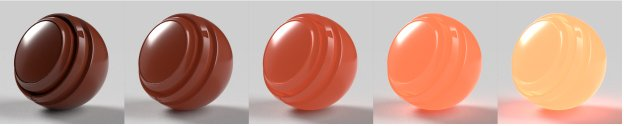
Emission color
The color of emitted light.
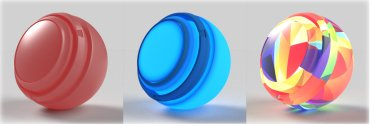
Sheen opacity
Simulates the effect of microscopic fibers or fuzz on the surface.
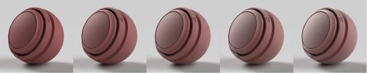
Sheen color
The color of the sheen effect.
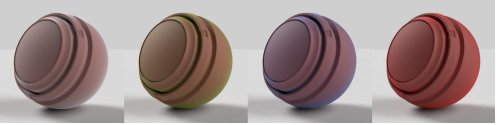
Sheen roughness
Softness of the sheen effect.
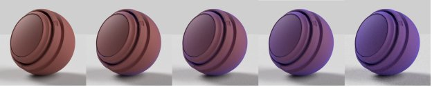
Translucency
The amount of light able to transmit through the surface.
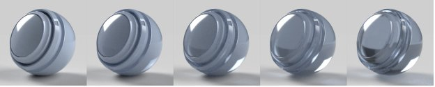
Absorption color
The color light will converge to as it is absorbed.
Absorption distance
Approximate distance in scene units that light will travel before reaching absorption color. If set to zero, thickness will not affect absorption color.
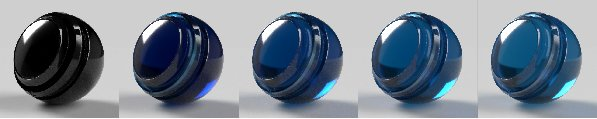
Index of refraction
The amount light bends as it passes through the object.
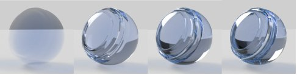
Dispersion
The amount the color spectrum spreads out when refracted.
Subsurface scattering
Scatters light below the surface, rather than passing straight through.
Scattering color
The color below the surface that scattered light will become.
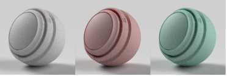
Scattering distance
Approximate distance light must travel before reaching full scattering.
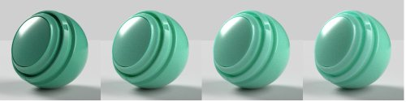
Scattering distance scale
A multiplier of the scatter distance. May be different for each color channel.
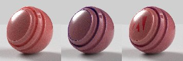
Red shift
Sets red light to travel further than other light colors. Useful for skin.
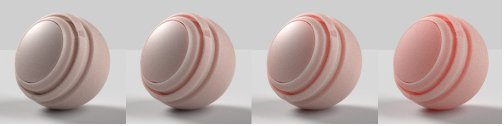
Rayleigh scattering
Sets orange light to travel further beneath the surface and blue light to travel less.
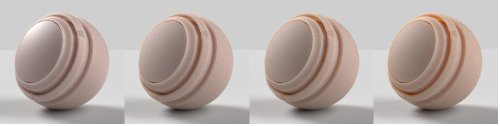
Volume thickness
The thickness of the surface relative to the bounding box of the object. Used for interior effects when the real thickness is not known.
Volume thickness scale
Multiplier of the volume thickness.
Coat opacity
Simulates a layer on top of the material. Used to create clear coats, lacquers, and varnishes.
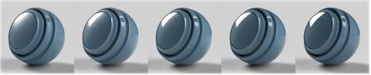
Coat color
The color of the coat.
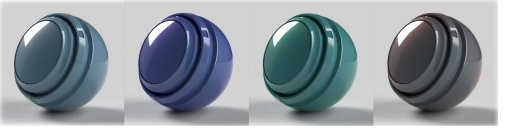
Coat roughness
How smooth or matte the coat surface is.
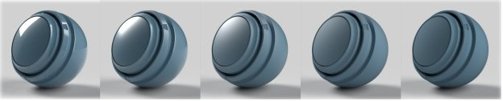
Coat index of refraction
The amount light bends as it passes through the coat.
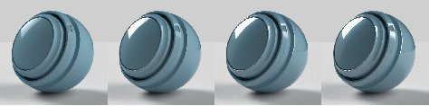
Coat specular level
The strength of light reflections on the coat at glancing angles.
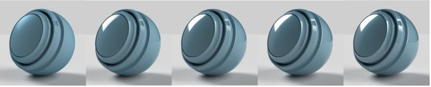
Coat normal
Simulate surface details like bumps and cracks on the coat surface.
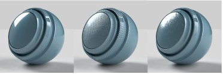
Coat normal scale
The strength of the coat normal effect.